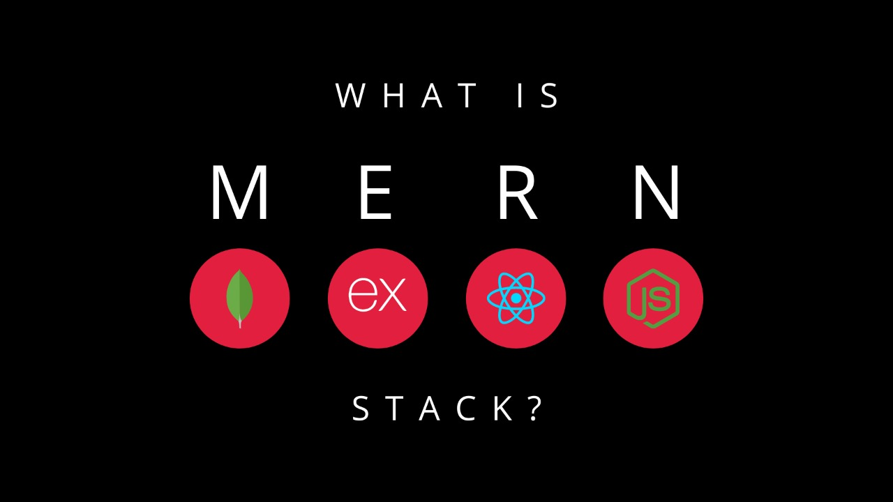

- Fast – Being a document-oriented database, easy to index documents. Therefore a faster response.
- Scalability – Large data can be handled by dividing it into several machines.
- Use of JavaScript – MongoDB uses JavaScript which is the biggest advantage.
- Schema Less – Any type of data in a separate document.
- Data stored in the form of JSON –
- Objects, Object Members, Arrays, Values, and Strings
- JSON syntax is very easy to use.
- JSON has a wide range of browser compatibility.
- Sharing Data: Data of any size and type(video, audio) can be shared easily.
- Simple Environment Setup – Its really simple to set up MongoDB.
- Flexible Document Model – MongoDB supports document-model(tables, schemas, columns & SQL) which is faster and easier.

Copywrite Issued by Sriram